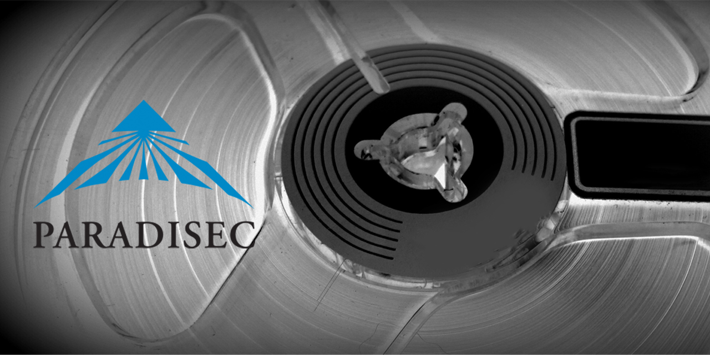

Table of contents
PARADISEC Ingestion Workflow Model
🚧 This page is currently under construction🚧

Last updated: 5 July 2021
Content for this document was last updated 22 December 2020. Previous iterations of our Operations Manual (prior to implementation of the Nabu catalogue) are available from the downloads section of our website https://www.paradisec.org.au/.
For questions or comments on this document please contact us at admin@paradisec.org.au, or write to us at:
PARADISEC
Sydney Conservatorium of Music, C41
University of Sydney, 2006
Ph: +61 2 9351 1279, Fax: +61 2 9351 1287
Role terms used in this document
Admin: Sydney Director (2020: Amanda Harris) Audio: Audio Preservation Officer (2020: Nick Fowler-Gilmore) PD: Project Director (2020: Nicholas Thieberger) SA: Systems Admin (2020: University of Sydney ICT)
Pre-ingestion (audio tapes)
Assess collection (Admin and PD)
Assess whether material is suitable for accession (PD in consultation with steering committee). Suitability should consider the following conditions, though materials not meeting these criteria are not necessarily excluded from the collection:
Rights
Does the depositor assert ownership of the material?
- Are the rights in the material clearly specified?
- Content criteria (assess against policy)
- is the material unique?
- is the country and language of the material known, and in the core area (non-Australian)?
- is there an alternative place for deposit of the recording?
- is the content of the recording in a high-risk language?
- is the format or recording medium at high-risk of obsolescence?
- institutional affiliation – give preference to consortium members
- ease of integration into our systems
- is data in a format we can handle (i.e. cassette, 1/4 inch reels)?
- if not, direct prospective depositor to suitable alternative facility
- consistency and adequacy of any metadata
If collection assessed as suitable, create a collection record in Nabu Assess tape condition and prepare material for transportation accordingly
Transportation
If the recordings are in bad condition (e.g. mould, rare formats, tape visibly damaged) send to Sydney (contact Admin). Transport any mouldy items in separate ziplock bags and do not pack with non-mouldy items
If in reasonable condition transport to nearest ingestion point, personal transport is preferable; transport in hand luggage if flying, if necessary use registered courier
- Packing – make sure end fastened on reel tape, pack tightly, wrap in bubble wrap
- Ensure against unnecessary shocks during transport
- Transport with inventory of contents
Receipt of materials at ingestion point (Admin)
- Check inventory against contents and contact depositor if any discrepancy
- Enter date in ‘data received’ field of Nabu
- Assess whether mould-affected and if so implement appropriate procedure (put in ziplock bags and store in cleaning room)
Metadata
Where possible get depositors to enter own metadata in Nabu:
- User signs up to Nabu, creating a login
- Admin or PD assigns edit access to user
Assign Persistent Identifier (PI) – if depositor already has a consistent naming system, use it, or else use numerical symbols for ‘item ID’, e.g. 001
Where depositor cannot enter own metadata, enter records manually or batch import records from a spreadsheet
- For batch import of new records: ensure all metadata is inserted into the PARADISEC basic metadata import spreadsheet located at http://www.paradisec.org.au/downloads.html (only those fields listed in the spreadsheet can be imported, and no changes should be made to fields or headings in the spreadsheet, metadata should only be added to existing fields)
- Open Nabu and click on the Dashboard tab
- Click on ‘Upload metadata file’ button
- Browse to location of file
- Click on ‘Add Collection from Spreadsheet XLS file’
- For manual entry of new records:
- Create item records (Admin) by adding item IDs and descriptions into the Collection screen
- Enter all metadata available into appropriate fields of catalogue, ensuring that all compulsory fields (marked with a red asterisk) have been filled
Label all tapes and tape cases to show PI, ensuring that no written information is covered up
Sort all tapes in numerical order in filing cabinet, or in dirty room if mould-affected
When tapes returned, note date in ‘tracking’ field of Item, Archive Information and tick ‘Tapes returned to depositor’ checkbox
Photograph tape covers and casings to capture all handwritten metadata
- Image files should be named with the same PI as the audio files
- Archival copies of images should be in tiff (.tif) format, jpeg (.jpg) copies can be archived as additional access copies
- The whole image should be captured, but in some cases it might be desirable to zoom in to the text to make sure it is fully legible in an additional image
- Even blank surfaces should be photographed to ensure that no metadata has been overlooked
- Include a ruler in the captured image to indicate scale
- See the Appendix at the end of this document on guidelines for image capture and also the Austehc image capture guidelines in the 2011 PARADISEC Operations Manual for more details
Prepare tapes for ingestion (Audio)
- Assess tape condition – treat mouldy items according to the below procedure (wear a mask and latex gloves as protective gear)
- Dehumidify in vacuum oven if necessary, with separate batches for mould-affected items
- If necessary, advice regarding duration of treatment and temperature can be found at NFSA and also within the IASA TC-04 Guidelines
- If mouldy remove any visible growths first with cotton bud or pad and solution of isopropyl and cetramide
- If sticky shed is present no special prior treatment is needed
- Clean and prepare for ingestion
Reel-to-reel
- Repair or replace lead tape and damaged splices if necessary
- Clean using slow spool and specialist equipment (cotton pads and isopropyl/cetramide solution); also clean flange (spool) separately
- Perform a second slow spool to repack tape
Cassette and DAT
- Replace splices if necessary (cassette)
- Fast forward and rewind to minimise print-through (cassette) and to repack tape (cassette and DAT)
- If mouldy, bag up separately, to avoid cross-contamination, shelve in PARADISEC’s Dirty Room and minimise time in Ingestion Room, replay on designated dirty cassette machine
Information on devices and servicing
| Format | Device | Date last tested |
|---|---|---|
| Cassette | TASCAM 122 Mk II | July 2014 |
| Mouldy cassette | Yamaha KX-W32 | July 2014 |
| Reel-to-reel 15 ips | Studer A810 | July 2014 |
| Reel-to-reel 7 1/2 ips | Studer A810 | July 2014 |
| Reel-to-reel 3 3/4 ips | Studer A810 | July 2014 |
| Reel-to-reel 7/8 ips | No suitable in-house machine | as of October 2015 |
| Minidisk | Processed at Melbourne | n/a |
| *.wav files | Procesed at Melbourne, ANU or APAC | 2015 |
| DAT | Sony PCM 7040 | July 2014 |
| CD | CD inspector on Audiocube 3 | n/a |
Ingestion process
Wavelab ingestion processes - Sydney Lab (Audio)
-
Avoid internet browsing and any activity over the network during digitisation (these activities can cause interference, which may result in digital clips and unwanted errors in the signal), avoid using or turn off mobile phones or other mobile devices, including close wi-fi transmitters, and as a precaution, close any programs other than WaveLab during recording of audio.
-
Reel-to-reel tapes go through Audio1 workstation (where StuderA810 is connected), cassette tapes go through either Audio1 or Audio2 workstations (both fitted with Tascam 122MKII’s cassette tape machines). Other sources, such as vinyl records, are to be connected separately as required and may, depending on how the device is connected, go through either Audio1 or Audio2 ingest stations.
-
Open the ‘record’ dialogue box (the button with the red circle at the bottom of the screen) and type in the name and path of the file that you will create. The destination folder will, on either audio machine, be ‘D:/WAV96 ingest’ (shortcut on desktop) followed by the name of the audio file ‘CollID-ItemID.wav’. Relevant subparts of an item are indicated ‘-A’, ‘-B’ for example, and are inserted after the PI and before the extension.
-
If digitization is being done from a copy tape (rather than an original), then ‘copy’ needs to be added into the third part of the filename (e.g. ‘AC1-001-A_copy’). This is so that we can avoid having to overwrite DOIs if a later file is produced from the original; the subsequent file can then be added, rather than replacing the ‘copy’ file, and it can be appropriately named (e.g. ‘AC1-001-A_original’).
-
If further work will be required on a file, such as splitting it into two separate channels, then the file should take a name that is distinct from the files that will ultimately be produced, to preclude any confusion. For instance, if the files to be archived will eventually be named AW1-001-A.wav and -B.wav and they are two sides of a single ingested recording that will require splitting, then name the file that comprises each of them as AW1-001_ The underscore as opposed to a dash will prevent the file from being erroneously archived. (Using Rif64 file format in Dobbin, we can now overcome our 2GB limit and so splitting of large files is not usually necessary).
-
It is a good idea to run the signal for a few seconds and adjust the level on the source selector so that it maxes out at about -100 dB on the record dialogue (the white stickers on the source selector are a rough approximation of good gain levels for the selected source). After a good level is established, return the tape to the beginning and commence recording, leaving at least 5 seconds of silence before the signal begins.
-
Adjust the azimuth - this is the angle at which the tape meets the head, and we want to adjust it so we can get the sharpest (closest to original position of record head) possible signal. You will need to have the cover off the tape deck. In the monitoring window, enable Phase scope in WaveLab - you will see a graph in the bottom-right, with clusters of moving points showing as the tape plays; ideally, these should line up along one of the axes. [Cassettes] Take the small flat screwdriver, and tweak the screw on the bottom-left of the cassette playback head slot (not the right screw), while the tape is playing. Use only very small movements – you don’t want to unscrew the screw and lose it in the machine. Listen carefully – you should hear the recording start to become sharper, as well as see the points start to line up more on the graph. Adjust the screw back after use. [R2R] Adjust the azimuth as it plays - use the allen key to turn the screw behind the heads. You should hear the recording get sharper, and see the moving points start to form a straight line in the graph in the monitoring window.
-
pay attention to the recording and note any analogue errors, such as pops, hisses, buzzing, microphone bumps. These should be noted in the ‘ingest notes’ in the catalogue. More generally, note the overall quality of the recording — whether it is at all muffled, distorted or good and clean. This information should also go into ‘ingest notes’.
-
analyse the file in Wavelab (shortcut: control-Y) (takes about 2 minutes for normal length file) — this generates temporary error markers wherever recording faults are apparent
- check any errors: if they are analogue errors, make a note of them in ‘ingest notes’; if they are digital errors, re-ingest – file size, waveform, length sample rate might need to be checked and adjusted in Wavelab. Where more serious corruption has occurred, check the most recent backup (there should be one somewhere). Keep regressing in stages until you find a version of the file’s history that is not corrupted. If no such file exists, contact the depositor to establish if the file had been corrupted prior to being received.
- Enter additional metadata into Nabu
- Enter dates digitised
- Enter name of operator in Operator field
- If recorded tape ID mentions date created, tape ID, recordist, or any other info not already in database, fill in relevant fields (check with admin as necessary, if unsure, leave blank)
-
if necessary, normalise the file. This should not normally be necessary where premonitoring has taken place and the tapes are in good enough condition to yield a good quality sound level.
- after ingestion finished, trim silence at beginning and end of file, leaving margin of 5 seconds’ silence
-
in the case of stereo reel-to-reel tapes that comprise two simultaneous mono recordings, split the 2 channels
-
name the files appropriately (for the time being, leave the raw, unedited files (the ones with underscored names instead of dashed ones) in this folder until a later backup can be made)
-
check that mandatory metadata fields (PI, title, date created, country, collector) are in Nabu catalogue, if not, add them. If you are unsure of what information to enter into the catalogue, liaise with Admin
-
Before adding files to Nabu, all mac users must ensure they delete any hidden files (they start with a . e.g. ‘.DS_Store’) so they do not cause errors, and also delete them immediately from the ‘Processing Area\forDobbin’ folder if they appear in there during the process of copying files across. To do this all Mac users must switch on viewing of invisible or hidden files. Instructions can be found here: http://www.macworld.co.uk/how-to/macsoftware/how-show-hidden-files-in-mac-os-x-finder-funter-3520878/
- place files in parapd00470.srv.sydney.edu.au\Processing Area\forDobbin, this will trigger Nabu to create matching .imp and .id3 xml export files (see below section Dobbin Processes for BWF generation for details). Otherwise, if more work will be undertaken at a later time, files should be placed on the server in parapd00470.srv.sydney.edu.au\Processing Area\waitingArea.
Dobbin processes for BWF generation (Audio)
- NABU monitors ‘forDobbin’ directory for .wav files, and when it finds one, it writes out the metadata for the corresponding item – if the item is marked ‘Ready for metadata export’ in the Item’s Admin panel. The exported metadata files are:
- parapd00470.srv.sydney.edu.au\Processing Area\xml[PID].imp.xml
- parapd00470.srv.sydney.edu.au\Processing Area\id3[PID].id3.v2_3.xml
-
XMLcheck monitors ‘forDobbin’ directory, and if a .wav file exists, it then also checks to see whether both the corresponding .imp.xml and .idv2_xml files exist. If both xml files are in the right directories, it moves the .wav file into the directory ‘processed\fromDobbin’.
-
Dobbin monitors ‘forDobbin’ for .wav files. When it finds a .wav file, it begins processing it. To do this it requires the .imp.xml file and the .idv2_xml files to be in the correct locations. Dobbin outputs a sealed BWF file with a .wav suffix and a derivative .mp3 file. Dobbin also produces a .qua file for each of these. These .qua files are generated only after the files have been successfully written to the output directory, which is ‘processed\fromDobbin’.
-
BWFhashgenerator monitors the ‘processed\fromDobbin’ directory for .wav files. If it finds one, along with a corresponding .mp3, .wav.qua and .mpqua, then it generates a hashsum for the wav and mp3, and writes them out to a file named [file]-checksum-PDSC_ADMIN.txt, which will contain the checksums for both wav and mp3 It then writes both .wav and .mp3, as well as the checksum .txt file, to ‘toNabu’, from which NABU harvests archive files.
-
this process commences once the wav file is in the folder ‘parapd00470.srv.sydney.edu.au\Processing Area\forDobbin’ and the necessary metadata has been entered into the catalogue (see above). Wrapping includes the necessary metadata and digitally seals the file to prevent it being altered
-
a backup of the file is kept in ‘parapd00470.srv.sydney.edu.au\Processing Area\processed\forDobbin’. This folder is used as a backup of the raw .wav files before they are processed in Dobbin and uploaded to the archive as bwfs and mp3s. Once we have received a report from Cron deploy@paradisec stating the file was SUCCESSFUL in its upload to our catalogue and the file appears in Nabu in its proper format, with relevant matching metadata. Then we can delete our original raw .wav backup copy. If this file generates an ERROR message, then we can refer back to our original .wav backup copy and reprocess.
- A script searches ‘forDobbin’ for any newly added wav files and harvests the file name, size and the audio properties and places a reference to them in the catalogue entry for that item
Ingestion of photographic slides
The process for ingesting slides and digital image capture is documented in Paradisec Operations Manual 2011, and the appended Austech manual http://www.paradisec.org.au/downloads.html. Contact PARADISEC staff for further details.
Digital text
-
formatted documents, e.g. in MS Word format, need to be saved as .rtf and .pdf, .docx files can also be archived. Check each file for character encodings. Use doxillion for mass file conversions.
-
if the file is of a specific type (e.g. a Toolbox file) then it needs to have sufficient documentation to make it readable (e.g. it may need .typ files accompany it).
-
put the files into the ‘toNabu’ folder where a script will pick them up to send to Nabu
University of Melbourne ingestion unit
This suite consists of a purpose-built computer, with a Digital Audio Denmark analogue to digital converter, a cassette player, minidisk player and reel-to-reel player. The computer has no internet connection (to prevent digital noise in the digitisation) so a hard disk is used to transport the files to another computer for transfer.
- Enter planned work times in PARADISEC google calendar in advance
- Enter details of tapes completed into the google spreadsheet
- Turn on computer – bottom one
- Log in
Metadata (done on a different computer that has an internet connection)
- Log on to catalog.paradisec.org.au
- Dashboard will show collections you are already working on, for view or edit
- Can search by collection ID in ‘Collections’ tab
- Enter all possible metadata, including what the source media are, who is the operator (i.e. you), and add audio notes (below)
Setting up for recording
- Open WaveLab 8.5 (click yes to run)
- Click record button to open recording dialogue box
- Enter folder and filename (have a folder for your work and subfolders of collection within that)
- File name format is XX1-001-A (collection, tape number, side A or B if needed)
- Select 24-96 sampling rate in the dialogue box
- Auto-stop after given duration – check if this is set (usually set to ~45 mins for one side of a cassette, but minidiscs and some tapes longer)
To record – cassette tapes
- Can lock the tape by pushing in the plastic lugs
- Check condition of tape, if there is anything strange about the way the tape runs through the mechanism, or if there is evidence of mould on the edge of the spool, or if bits of the media are falling off (‘shedding’) then refer it to PD Nick Thieberger.
- Settings are Jack, SP/DIF, Analog In, 96kHz 24bit, Int sync.
- Make sure the leads to the Studer (reel-to-reel) are unplugged from the back of the Digital Audio Denmark unit.
- Have output set to around 7 to start
- Clean heads and capstans of playback machine with isopropyl alcohol and cotton tips
- Fast forward once, right through both sides of recording, but be careful towards end of tape – tape can come loose with sudden stop. Can use the separate tape deck for this while digitising other tapes.
- Play a bit to check levels. Can adjust output up or down as needed. Levels can be monitored on converter and in WaveLab. Around -12dB is good – not into the red.
- If monitoring is not showing up in WaveLab, go to Options > Preferences > Audio device. This should be set to MME-WDM SPDIF/ADAT (1+2) (RME Babyface) for both playback device AND recording device.
- Adjust the azimuth - this is the angle at which the tape meets the head, and we want to adjust it so we can get the sharpest possible recording. You will need to have the cover off the tape deck. In the monitoring window in WaveLab, you will see a graph in the bottomright, with clusters of moving points showing as the tape plays. Ideally, these should line up along one of the axes. Take the small flat screwdriver, and tweak the screw on the bottomleft of the cassette slot (not the right screw), while the tape is playing. Use only very small movements – you don’t want to unscrew the screw and lose it in the machine. Listen carefully – you should hear the recording start to become sharper, as well as see the points start to line up more on the graph. Adjust the screw back after use.
- Hit record button in WaveLab. If it flashed red with ‘waiting’, hit again in order to record. Wait ~5 secs then hit ‘play’ on tape player.
While playing Take audio notes:
- document state of original the recording
- Whether mono or stereo
- Which channel (left or right)
- Any clipping in original
When file finished
- Stop tape first then stop recording ~ 5 secs after (good to leave a bit of space at start and end)
- Cut out any silence in file – click and drag to select (both channels), then hit delete (or right-click, ‘select from cursor to end of file’)
- File > Save
- Flip cassettes to do other side. Note that tape player sometimes automatically reverses direction, make sure it is facing > if you have turned tape yourself.
- When tape is done, make sure to insert digitisation slip with date, name, item number
- Remember to adjust the azimuth back to original position so the screw doesn’t come out when adjusting it for the next tape.
To record – minidiscs
- Need to connect to fibre optic cable to the audio interface. It’s the one labelled ‘MD Out’. Take out the middle of the three cables on the interface and plug the minidisc cable in there.
- Settings are Jack, Optical, Digital In, 96kHz 24bit, Int sync.
- In WaveLab sampling rate option is 24-96
- Check the audio device preferences to make sure correct device is selected for both playback and recording (as per tapes).
- May need to close and re-open the recording dialogue after changing settings to refresh
- Hit record, then after ~ 5 secs hit play on MD player. Volume can’t be adjusted so digitise as is but keep audio notes.
To record – DAT tapes
- [Unlikely that we will have to deal with DAT anymore]
To record – reel-to-reel
-
Set machine to ¼ inch, rest of the settings are same as for cassettes (96kHz 24bit)
-
Switch on reel-to-reel machine - this is the black switch at the back of the lower part of the machine. Clean the heads before loading a reel.
-
Put the reel on the left spindle. You need to line up the two metal parts of the spindle to slide it on. Thread the leader tape across the heads, with the tape coming off the reel counter-clockwise and being threaded under the first guide wheel, over the next, then past the heads. If the reel has no leader tape, USE GLOVES to handle the tape and add some new leader tape using the splicing tape and block. Thread it onto an empty take-up reel on the right and wind on a little bit. Lock the supply reel and take-up reel in place by lifting the top part of the metal spindle up and turning it.
-
Fast forward once through the tape onto supply reel and swap the reels over and re-spool. Press play to listen to the audio. Speed should be set to match that of the reel if possible - lowest setting on machine is 3 ¾, so if tape has been recorded at a lower speed like 1 ⅞, record at 3 ¾ and fix in post-processing.
-
Adjust the azimuth as it plays - use the Allen key to turn the top right hand side screw on the play head. You should hear the recording get sharper, and see the moving points start to form a straight line in the graph in the monitoring window.
-
Adjust the volume - on the top of the machine, there are two pairs of knobs labelled ‘record level’ and ‘rep/sync level’. The tape may have a mono recording on each side, in which case you will see information being captured in each channel, but these tracks will be from separate recording sessions. If this is the case, it is the RIGHT CHANNEL you want to look at in the monitoring window. To adjust the levels for this, you want to adjust the rightmost of the first pair of knobs, or the first ‘rep/sync level’. As for cassettes, around 7 should be ok, but audio levels may vary quite a bit. If the tape is a stereo recording - i.e. audio was recording to both channels simultaneously - you will need to check that the levels are ok in both the left and right channel.
-
Once you have finished one side, you need to check if there is a Side B. If the tape has two mono tracks, you will have been able to see this while recording the first side, but the audio in the left channel will have been recorded in reverse and needs to be discarded and done separately. Take off the empty reel, and remove now-full take-up reel. Flip it over and load onto the left spindle, and then put your empty original reel on the right, and follow the same process.
-
Once you have recorded each mono side like this, save just the right channel from each track by going to File > Save Special (Wave) >: Save Right Channel As. This will save just the right channel as a mono file.
-
Save one as Side A and one as Side B * If the reel has a stereo recording on each side, there is no need to do this - just save each stereo file as Side A and B.
Restore from archive proces (SA)
Restoring a file on Azoulay, which was modified or created in the last several days:
Note: If it is one of your files you can restore it, otherwise this action must be performed by the Super User (either Abed Kassis, or Tom Honeyman). You must be able to use a unix shell to do this.
- Connect to Azoulay by ssh (ssh username@azoulay.arts.usyd.edu.au)
- navigate to the directory to which you want to recover or wind back a file (cd /r0/… etc)
- run ‘recover -s nsrhost’
- you should get a ‘recover>‘ prompt.
- ‘help’ will list available commands. ‘ls’ will list files that you can recover.
note: files older than a month will not be shown. You may need to get an older tape loaded. Abed Kassis (or the ArtsIT server administrator) should handle this process by contacting ICT and getting them to load the correct tape. If you are recovering a file from the backups of ‘Send to Archive’ then the tape number listed in the catalogue is necessary. Note however, that it will probably be easier to recover the file from Store/APAC (see 2 below). IMPORTANT: you must monitor the recovery process as it will prompt you if you need to overwrite a file. Leaving your terminal without responding to the prompt will halt the tape robot, and may result in the automatic backups not working.
Check PARADISEC repository reports (Admin/PD)
- check PARADISEC archiving report emailed weekly to all project members from deploy@paradisec.intersect.org.au
- identify any anomalies and rectify, reprocessing relevant files as necessary.
Access to Archived files in Paradisec repository individual collections list the items available as part of that collection. A label appears next to each item indicating whether access is open or closed. Users can click through to the individual files which can be streamed or downloaded directly from the catalogue. If an item has restricted conditions, the depositor may need to be contacted to request permission.
Appendix: Notes on image capture equipment
- Canon Powershot G6
- Powerbook G4
- Camera tripod
- Tungsten light bulbs
Rotating the photographs
If the ‘Rotation’ button is greyed out and not working in the Remote Shooting and Image Browser windows, then the camera might have the ‘Auto Rotate’ function on. This function automatically rotates the image according to which way the camera is being held (ie. Portrait or landscape), this is useful if the camera is vertical, but not useful if it is being held horizontally.
To turn off the Auto Rotate function on the camera:
- On the camera, press the menu button
- In the menu, use the arrow keys to scroll down to Auto Rotate
- Press the left/right arrows to change it to ‘off’
- If the Auto Rotate function is off, you can rotate images in the remote capture window before you take the photograph and it will also change the orientation of the view finder. It is also possible to rotate the photograph afterwards in the Image Browser window by selecting the photograph and selecting ‘rotate’ in the ‘edit’ menu.
Folders
when starting the Remote Shooting window, you need to choose the folder that the photographs go into, the contents of which are displayed in the image browser. Put the photographs into a temporary folder (named eg. InProgess) first, and then, in ‘Finder’, to move the photographs to their proper folder afterwards. There are a few reasons for this:
- it is quicker to move images in ‘Finder’ after they have been taken than to change what folder they initially go in when the photo is taken.
- the image browser slows down if it has too many (more than about 100) images to display, so if you are dealing with a large amount of photographs, you can transfer them to their proper folder progressively.
- if you accidentally double click ‘send to trash’ it will not only delete all the photographs in the displayed in the Image Browser, but any other sub-folders that were also in the folder the photographs were saved in. It is all recoverable from the Trash, but is it still better to have a folder that has all its contents on display.
Shooting Settings in the Remote Capture Window
- Photo Effect - changing the Photo Effect from ‘Effect Off’ to ‘Vivid’ makes light pencil and faded ink stand out better.
-
Focusing Point - the ‘Manual Selection – Center’ function means the process of taking the photograph and uploading it to the computer is slightly quicker because the camera does not refocus for each picture, because it automatically focuses on the centre of the image. However, if there is nothing in the centre of the page (for example the text is only at the top of the page, or in a column down the side of the page) or the writing is very pale, the image will be out of focus and it is better to change the Focusing Point to ‘Automatic Selection’. Generally, leaving it on ‘General Selection’ lessens the chance of a fuzzy picture because the camera re-focuses for each photograph.
-
Macro - if the ‘Automatic Selection’ focusing point is on and the image is still fuzzy, then change the Macro to ‘On’.
- Lighting - having the lighting rig further away from the page makes the light more even. A higher lighting rig will also make it less likely to appear in large images where the camera has zoomed out, so it will not have to be moved very often. If the paper is shiny or there is pencil which reflects the light, putting paper light shades on the light bulbs or turning them off altogether (if there is adequate lighting from the room light or a window) reduces the reflection.
General advice
- You can also release the shutter button by pressing the spacebar.
- You can change the name of an individual in the Image Browser window by double clicking on it.
- For images with little contrast (eg. Light pencil, faded ink), turning off the Tungsten light bulbs and, if there is daylight from a window, the room lights, as well as changing the Photo Effect in the Shooting Settings to ‘Vivid’ is a good way to get a clearer image.
- If taking a lot of photographs of papers of a uniform size, drawing pencil dots on the backing cardboard to line up the paper speeds up the process. Folded-over post-it notes are a good way to stick down curling paper.
- If you want to make a very small adjustment to the zoom, it is easier to adjust the height of the camera tripod than adjusting the zoom on the computer.
- A suggestion for making copying books easier: if it were possible to make the automatic page numbering ‘odd’ or ‘even’, then every second page could be copied. This would be useful when photographing books because you could photograph all the left-hand pages and then all the right-hand pages, and you would only have to turn the page while keeping the book in place, rather than having to move it after taking each photograph.